FOOD IS OUR COMMOM GROUND, A UNIVERSAL EXPERIENCE
- JAMES BEARD
One way food blogging is different from other types of blogging is humankind's innate response to food. We
LOVE
food!But once you've enticed your readers with your beautiful photographs, how do you keep their interest
and
keep them from running off to the next decadent delight?That's where the hook comes in YUM YUM
WE love books.WE love food. Ever since I was a little kid I have had this immense passion for cooking.I
thought
to myself why not share with the rest of the world wholesome healthy foods and ways to be happy and healthy
that
will keep even the most snobby foodie asking for more. So here you will be able to find loads of fun
including
healthy recipes to tantalize your taste buds or treat your family.
RECIPIES
Click on the picture for recipe.
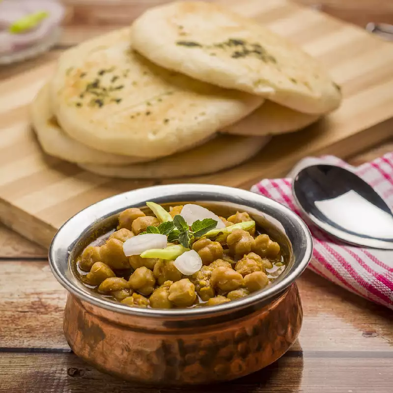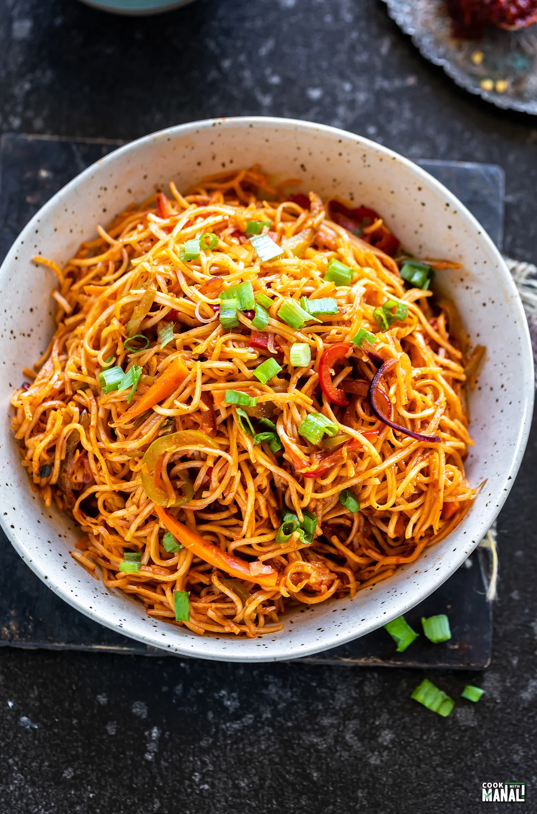
Chole Bhautre
For the chole
Combine the kabuli chana, salt, tea leaf tied in muslin cloth and enough water in a pressure cooker and
pressure cook for 3 whistles.
Allow the steam to escape before opening the lid. Remove the tea powder tied in muslin cloth and drain the
kabuli chana. Keep aside..
Heat the oil in a deep non-stick pan and add the cumin seeds. Sauté on a medium flame for 30 seconds.
Add the onions, ginger and garlic and sauté on a medium flame for 1 to 2 minute or till the onions turn
translucent..
Add the chole masala, chilli powder, dried mango powder, turmeric powder, coriander powder, cumin seeds
powder, salt and 1 cup of water, mix well and cook on a medium flame for 1 to 2 minutes, while stirring
occasionally..
Add the kabuli chana, mix well and cook on a medium flame for 5 to 7 minutes, while stirring
occasionally..
Mash the kabuli chana once lightly with a help of a masher. Switch off the flame, keep aside
For the bhature
Combine the flour, potatoes, curd, oil and salt and knead to make a soft dough using enough water.
Cover the dough with a wet muslin cloth and rest the dough for 20 minutes.
Divide the dough into 8 equal portions and roll each portion into a 150 mm. (6”) diameter circle using a
little plain flour for rolling.
Heat the oil in a deep non-stick pan and deep-fry the bhatures, one at a time, till they turn golden
brown in colour from both sides.
How to proceed to serve chole bhature
Serve hot bhatures immediately with the chole, sliced onion and lemon wedges.
Chicken Biryani
Mix tomato puree, yogurt, ginger garlic paste, green chilli paste, red chilli powder, turmeric powder,
roasted cumin powder, garam masala, coriander powder and salt. Stir well.
Marinate the chicken with this mixture and keep aside for 3-4 hours.
Heat oil in a pan. Fry the onions until golden brown.
Add the marinated chicken and cook for 10 minutes.
Add 4 cups of water to the rice. Mix saffron in milk and add to it.
Add cardamom powder. Add the chicken pieces.
Pressure cook the rice. Mix gently.
Garnish with green coriander leaves and serve hot
Noodles
Boil the noodles.
Microwave the veggies & add seasoning, sauces.
Heat oil in a pan. Fry the onions until golden brown.
Add the noodles & microwave again.
Paneer Tikka
Marination for paneer tikka
Dry roast and pound cumin seeds, coriander seeds, brown cardamom, green cardamom, cloves, black pepper, star
anise and shahee zeera in a mortar and pestle.
In a bowl add ginger garlic paste, turmeric powder, red chilli powder, coriander powder, salt, kashmiri
chilli powder, refined oil, coriander leaves chopped, mint leaves chopped, lime, dry mango powder, chaat
masala, green chilli, whisked curd and hara masala. Mix them all
For grilling paneer tikka
In a tray spread some paneer cubes, julienne onion, capsicum and tomatoes.
Mix the masala in the tray. Marinate the paneer cubes.
Skewer the tikkas for roasting.
Now keep the marinated paneer tikkas in the fridge for 45 minutes.
Then grill the tikkas till cooked.
Serve the paneer tikka hot.
Snapshots from "the weekend outings"
Some snapshots may appear differently on your device depending on screen size.
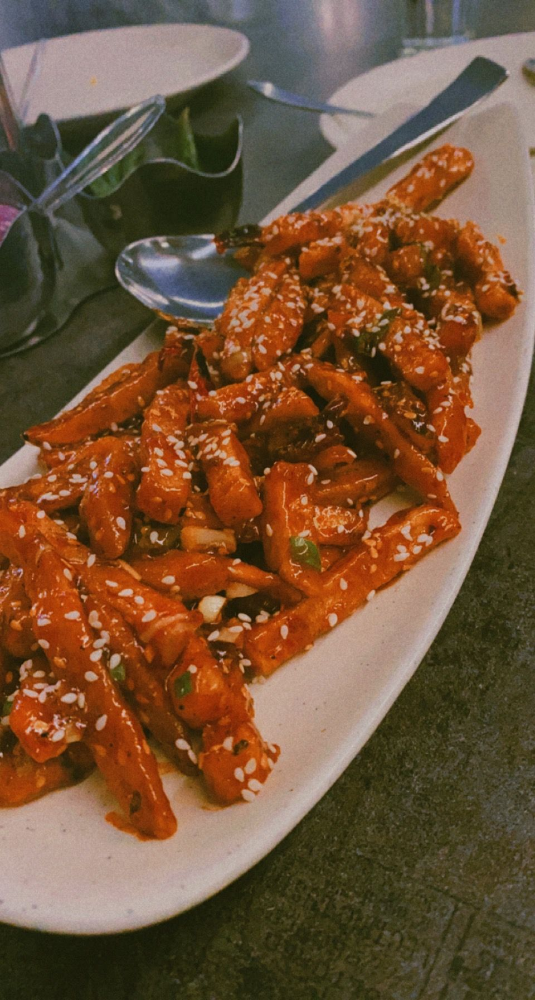
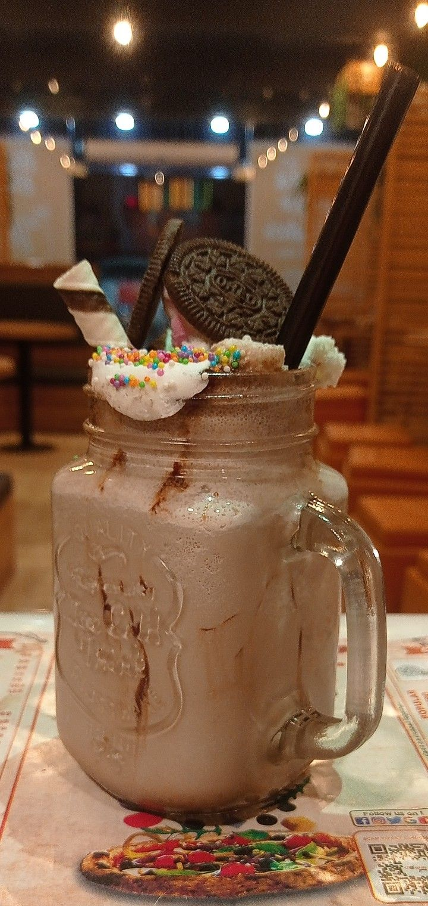
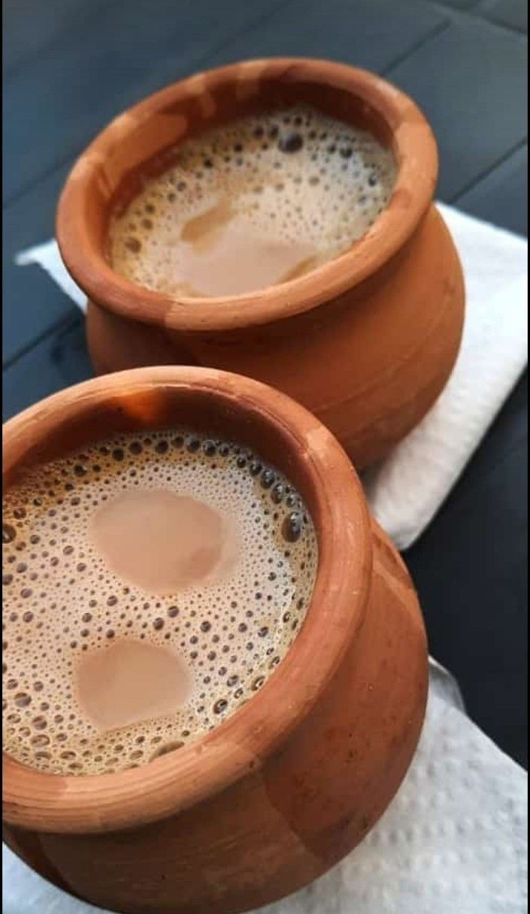
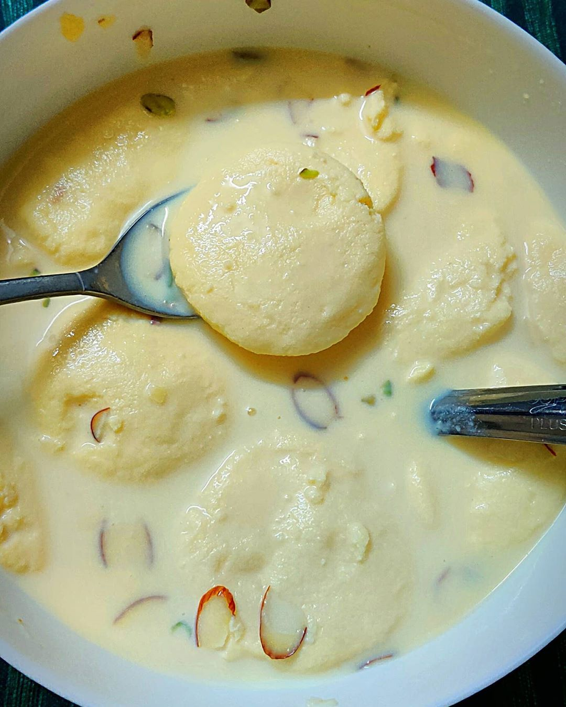
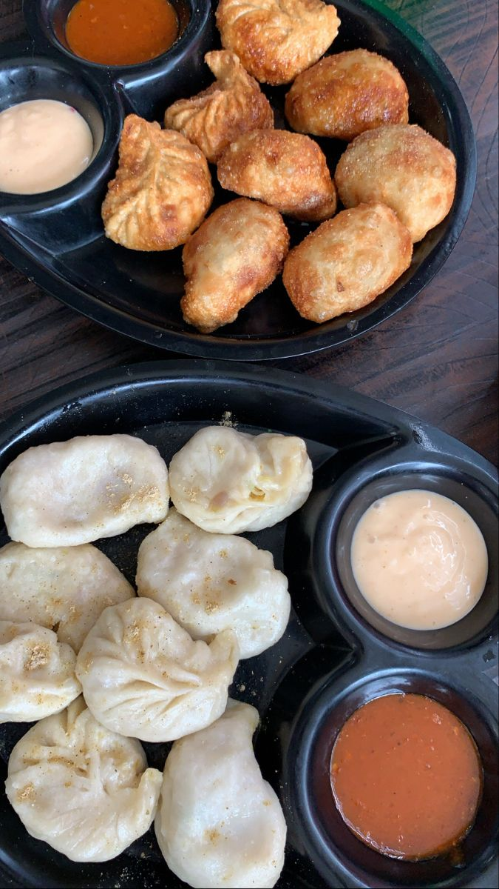
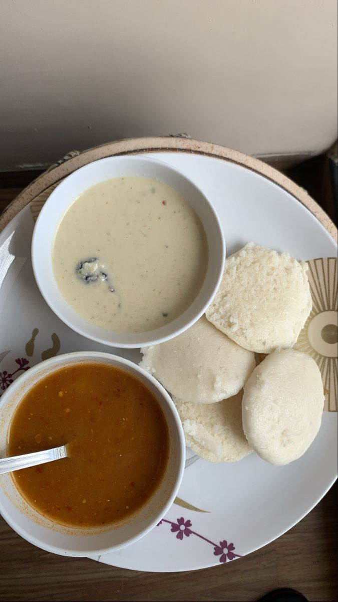
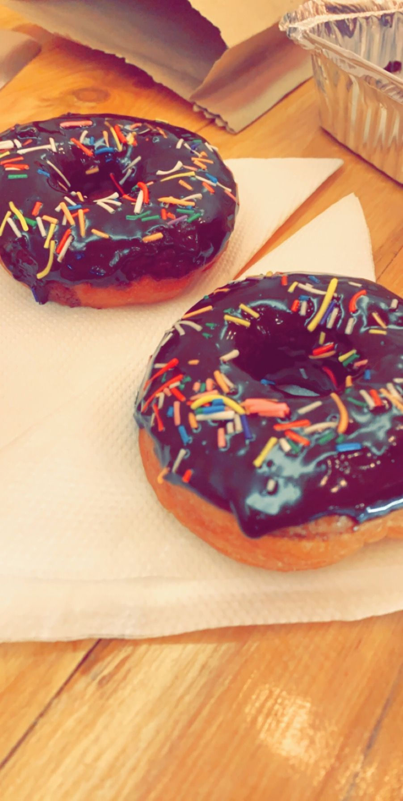
Contact Us
We are bunch of tech enthusiast striving to build somethign spectacular.
 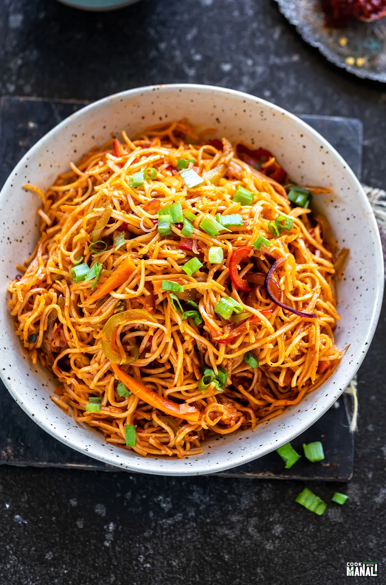
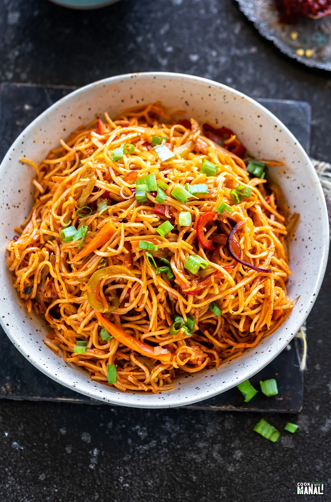